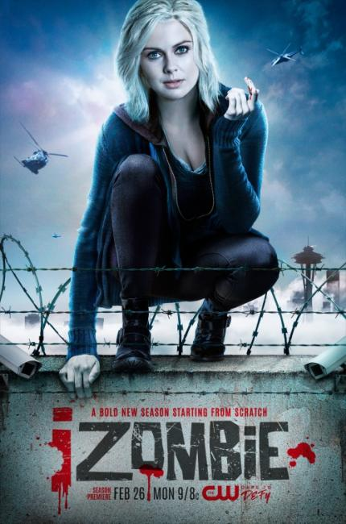

Gwen Dylan is a gravedigger in an eco-friendly cemetery...and a zombie detective. Once a month, she has to eat a human brain - both to keep from going all 'Night of the Living Dead,' and to keep her own memories intact. As a result, Gwen's mind is crowded with the dead person's thoughts. And lately, she feels compelled to fulfill their final requests. Torn between a mysterious mummy and a dashing young monster-hunter, Gwen is set for adventures beyond imagination! A were-terrier, a swinging '60s ghost and a pack of paintball blasting vampires complete the cast of I, ZOMBIE.

iZombie is an American television series developed by Rob Thomas and Diane Ruggiero-Wright for The CW. It is a loose adaptation of the comic book series of the same name. The series premiered on March 17, 2015. The CW renewed the series for a fourth season, which premiered on February 26, 2018.